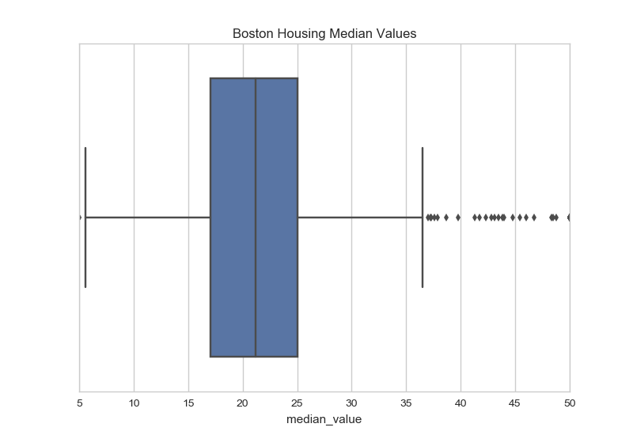
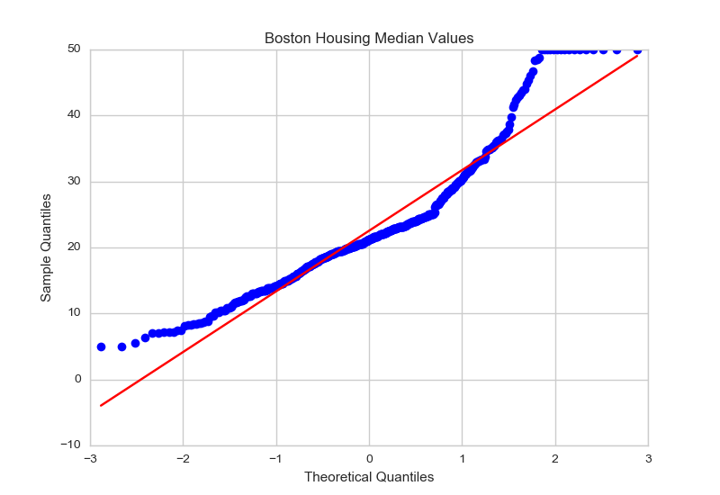
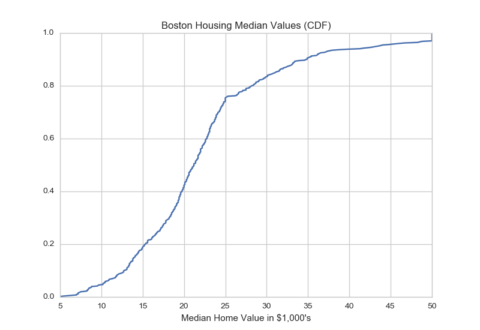
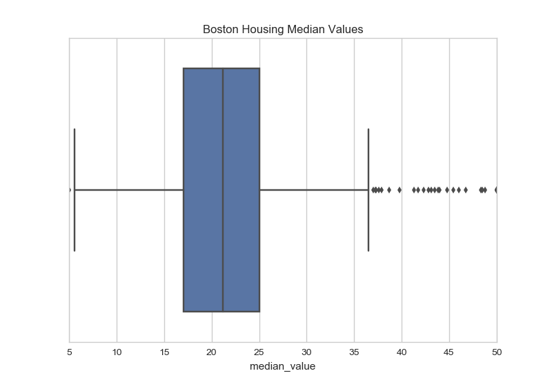
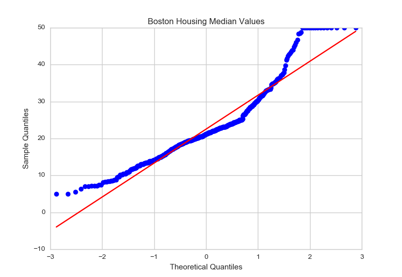
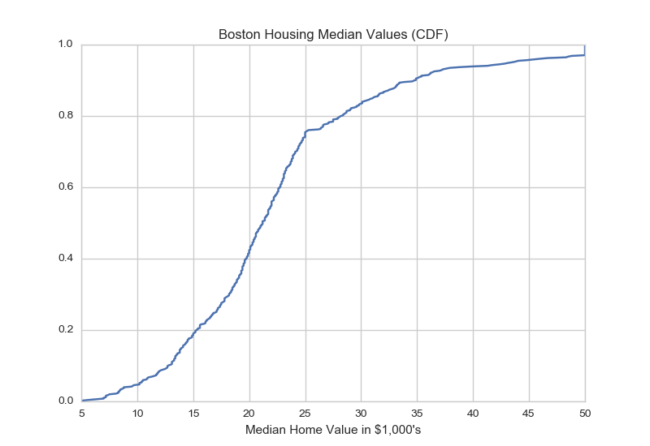
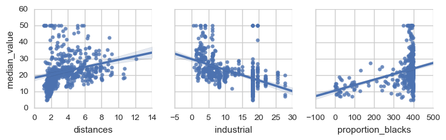
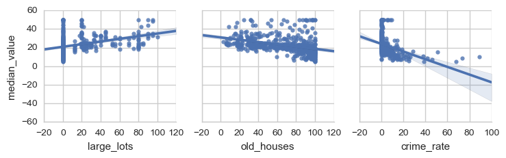
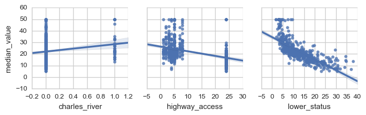
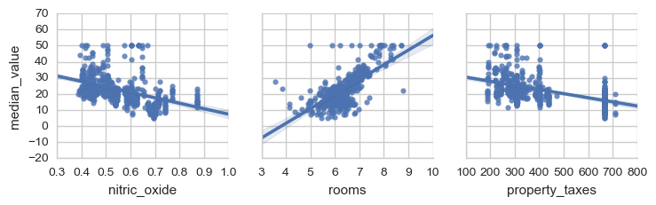

Statistical Analysis and Data Exploration¶
The Data¶
The data was taken from the sklearn.load_boston function, which itself cites the UCI Machine Learning Repository as their source for the data. The data gives values for various features of different suburbs of Boston as well as the median-value for homes in the suburbs. The features were chosen to reflect various aspects believed to influence the price of houses including the structure of the house (age and spaciousness), the quality of the neighborhood, transportation access to employment centers and highways, and pollution.
Here is the description of the data variables provided by sklearn.
| Variable Name | Description |
|---|---|
| CRIM | per capita crime rate by town |
| ZN | proportion of residential land zoned for lots over 25,000 sq.ft. |
| INDUS | proportion of non-retail business acres per town |
| CHAS | Charles River dummy variable (= 1 if tract bounds river; 0 otherwise) |
| NOX | nitric oxides concentration (parts per 10 million) |
| RM | average number of rooms per dwelling |
| AGE | proportion of owner-occupied units built prior to 1940 |
| DIS | weighted distances to five Boston employment centres |
| RAD | index of accessibility to radial highways |
| TAX | full-value property-tax rate per $10,000 |
| PTRATIO | pupil-teacher ratio by town |
| B | 1000(Bk - 0.63)^2 where Bk is the proportion of blacks by town |
| LSTAT | % lower status of the population |
| MEDV | Median value of owner-occupied homes in $1000’s |
Note
The data comes from the 1970 U.S. Census so its values don’t (necessarily) reflect current values.
Cleaning the Data¶
Since there are no missing data points, there isn’t much to do to clean the data, but the odd variable names increase the likelihood of error so I’m going to expand them to full variable names.
| Original Variable | New Variable |
|---|---|
| CRIM | crime_rate |
| ZN | large_lots |
| INDUS | industrial |
| CHAS | charles_river |
| NOX | nitric_oxide |
| RM | rooms |
| AGE | old_houses |
| DIS | distances |
| RAD | highway_access |
| TAX | property_taxes |
| PTRATIO | pupil_teacher_ratio |
| B | proportion_blacks |
| LSTAT | lower_status |
Summary Statistics¶
| Item | Value |
|---|---|
| Total number of instances | 506 |
| Total number of features | 13.0 |
| Minimum house price | 5.0 |
| Maximum house price | 50.0 |
| Mean house price | 22.53 |
| Median house price | 21.2 |
| Sample Standard deviation of house price | 9.19 |
 





Looking at the distribution (histogram and KDE plot) and box-plot the median-values for the homes appear to be right-skewed. The CDF shows that about 90% of the homes are $35,000 or less (the 90th percentile for median-value is 34.8). The qq-plot and the other plots show that the median-values aren’t normally distributed.
Question 1¶
Of the features available for each data point, choose three that you feel are significant and give a brief description for each of what they measure.
   Looking at the plots, the three features that I think are the most significant are lower_status (LSTAT), nitric_oxide (NOX), and rooms (RM). The lower_status variable is the percent of the population of the town that is of ‘lower status’ which is defined in this case as being an adult with less than a ninth-grade education or a male worker that is classified as a laborer. The nitric_oxide variable represents the annual average parts per million of nitric-oxide measured in the air and is thus a stand-in for pollution. rooms is the average number of rooms per dwelling, representing the spaciousness of houses in the suburb.
Question 2¶
Using your client’s feature set ``CLIENT_FEATURES``, which values correspond with the features you’ve chosen above?
| Variable | Value |
|---|---|
| lower_status | 12.13 |
| nitric_oxide | 0.66 |
| rooms | 5.61 |
| Variable | Min | Q1 | Median | Q3 | Max | Mean | Std |
|---|---|---|---|---|---|---|---|
| lower_status | 1.73 | 6.95 | 11.36 | 16.96 | 37.97 | 12.65 | 7.14 |
| nitric_oxide | 0.39 | 0.45 | 0.54 | 0.62 | 0.87 | 0.55 | 0.12 |
| rooms | 3.56 | 5.89 | 6.21 | 6.62 | 8.78 | 6.28 | 0.70 |
Comparing the values for the client to the median values for the data set as a whole shows that the client has a higher ratio of lower-status adults, more pollution and fewer rooms than the median suburbs so I would expect that the predicted value will be lower than the median.